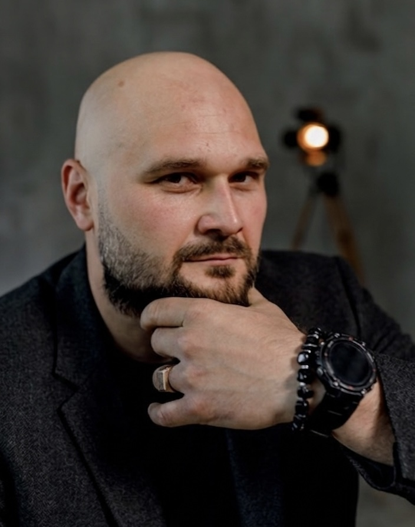
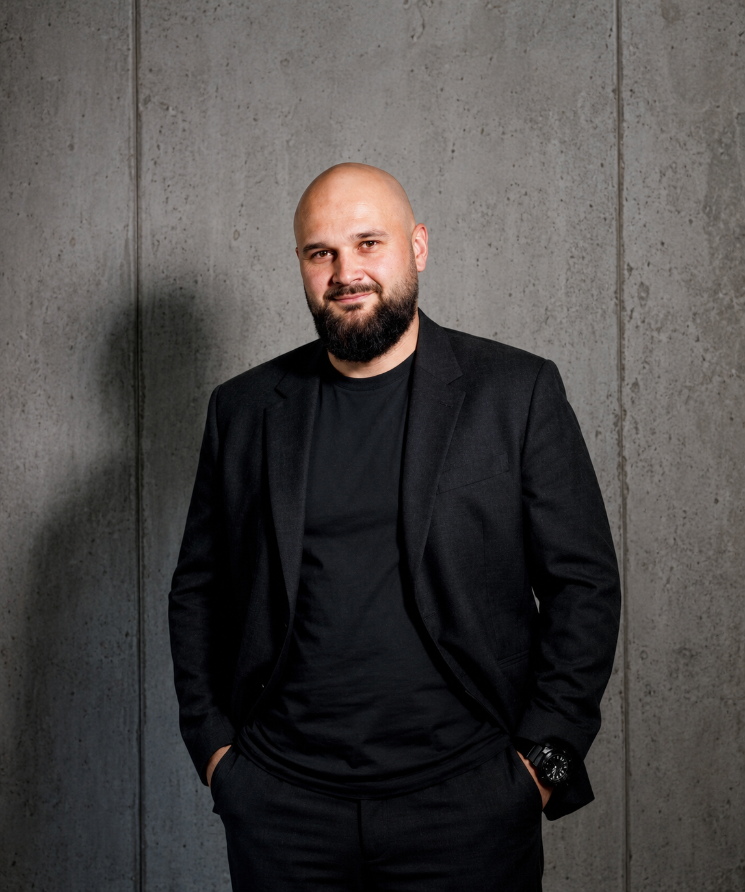

ПРОСТІР
ТУРБОТИ
ПРО СЕБЕ
Допомагаю виявити приховані сценарії поведінки, болючі тригери та внутрішні конфлікти, які заважають у вашому житті. З візуальним результатом.

СТРУКТУРА
ТА ЯСНІСТЬ
Вітаю! Я — Дмитро Будяк, психолог. Мій професійний шлях поєднує інтегративний підхід у психології та практичний досвід супроводу військових і ветеранів у кризових станах.
Там я чітко зрозумів: людині у напрузі потрібна не абстрактна порада. Їй потрібна можливість побачити себе збоку чесно, без зайвих оцінок та осуду.
Я не оцінюю ваші рішення. Не кажу, як «треба було». Те, що ви відчуваєте — важливо. Це ваша реакція та ваш досвід. І з цим варто працювати.
МОЖЛИВО, ВИ
ВПІЗНАЄТЕ СЕБЕ
ПОСТІЙНА ТРИВОГА
Наче об'єктивно все нормально, але всередині фонова напруга не зникає. Відчуття, що от-от станеться щось погане.
СКЛАДНІ СТОСУНКИ
Ті самі конфлікти, розчарування та вибір «не тих» партнерів знову і знову. Неможливість вийти з руйнівного сценарію.
ВИГОРАННЯ ТА АПАТІЯ
Немає сил навіть на те, що раніше приносило задоволення. Життя відчувається як постійне «треба» та фактична відсутність власного «хочу».
ВІДСУТНІСТЬ КОРДОНІВ
Невміння сказати «ні». Постійне підлаштування під інших, навіть на шкоду власним інтересам.
ЩО ВИ МОЖЕТЕ ОТРИМАТИ
Чітко побачите, що і чому вас тригерить.
Перестанете наступати на ті самі граблі у стосунках чи роботі.
Повернете віру в себе і будуватимете своє життя з опорою на власні сили.
Матимете на руках конкретні кроки: що робити, коли знову «накриває».
КАРТА
ПСИХІКИ
Більшість терапій — це фактично усні бесіди. Я пропоную інший підхід.
Це не просто розмова. Під час сесії ми створюємо наочну візуальну схему (mind-map) вашої психіки. Ви буквально бачите на екрані, як працює ваш мозок, звідки беруться ваші реакції та де заховані ресурси.
Після глибокого дослідження ви отримуєте цей структурований документ — вашу особисту інструкцію до себе.
ДИПЛОМИ


* Гортайте слайди або натисніть на диплом, щоб відкрити його на весь екран
АНОНІМНІ ВІДГУКИ
«Діма, привіт! Перечитую нашу карту вже третій раз. Нарешті зрозуміла, чому мене так криє, коли хлопець просто мовчить. Вчора замість істерики відкрила схему, подивилась на свої тригери і реально попустило. Це якийсь меджик, дякую величезне!»
«Йшов на сесію дуже скептично налаштований. Думав, знову будуть колупати дитинство і питати, що я відчуваю. Але розбір вийшов максимально по ділу, як для мужика. Побачив свою «сліпу зону» в роботі, тепер ясно, куди зливаються всі сили і чому я постійно вигораю.»
«Дуже боялась йти. Думала, що зі мною щось не так і мене будуть засуджувати за мої вчинки. А вийшло дуже тепло і комфортно. Карта психіки — це топ. Наче реальна інструкція до самої себе. Тепер я бачу свій базовий сценарій і розумію, куди мені рухатись далі.»
ЧАСТІ ЗАПИТАННЯ
Звичайна консультація — це усний формат розбору вашого запиту. Карта психіки — це глибоке дослідження, після якого ви отримуєте візуальну схему своєї психіки.
Напишіть мені в Telegram коротко про свою ситуацію, і я дам знати, чим зможу допомогти.
Стандартна сесія триває 60 хвилин. Формат: онлайн-відеозв'язок.
Працюю виключно індивідуально і лише з повнолітніми (18+).
Це нормально. Достатньо розуміння того, що вам потрібна допомога. На першій зустрічі сформулюємо запит разом.
ФОРМАТИ РОБОТИ
КОНСУЛЬТАЦІЯ
Усний розбір ситуації. Без письмового звіту. (60 хв)
- Аналіз поточного стану
- Усні рекомендації
КАРТА ПСИХІКИ
Пакет із 5 сесій. Глибока сесія + візуальна схема (mind-map). Вартість вказана за одну консультацію.
- Усе з базової консультації
- Схема тригерів та реакцій
- Аналіз 10 пунктів карти
- План перших дій
КАРТА PRO
Пакет із 20 сесій. Максимальний розбір. Додатковий текстовий супровід. Вартість вказана за одну консультацію.
- Коріння реакцій
- Детальний аналіз особистості
- Велика інструкція до себе
Екстрена консультація
Зв'язок можливий навіть о 2-й ночі.

ДОСИТЬ ВИВОЗИТИ ВСЕ
САМОСТІЙНО
Готові розібратися в причинах і побачити структуру? Напишіть мені.